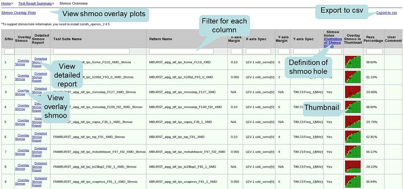
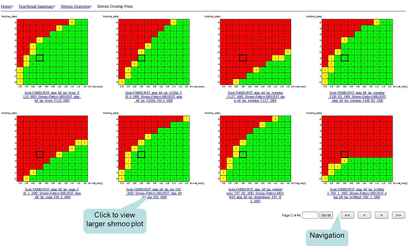
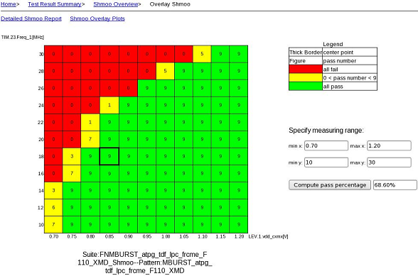
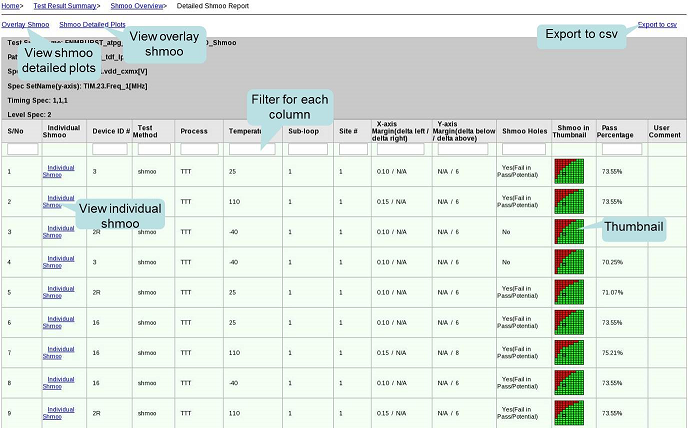
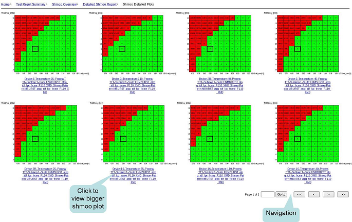
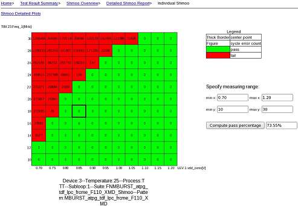

Viewing the shmoo analysis report This task introduces how to view the generated shmoo analysis report. Procedure View the Shmoo Overview page:  View the Shmoo Overlay Plots:  View an Overlay Shmoo Plot. To display the pass percentage, specify a measuring range and click Compute.  View the Detailed Shmoo Report for one test suite:  View the Shmoo Detailed Plots:  View the Individual Shmoo plot. To display the pass percentage, specify a measuring range and click Compute.  Related informationViewing the comparison datalog reportReport Datalog Files Functional changesIntroduced in SmarTest 7.3.2